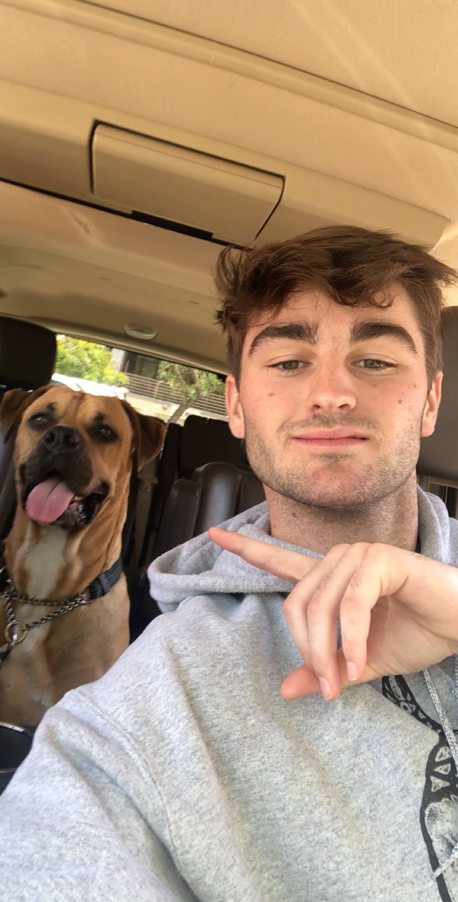

I am currently a sophomore enrolled at UW-Madison. I created this website for my LIS351 class. I'm originally from Los Angeles California. I like to spend my time on the lake and hanging out my friends. I enjoy watching sports and movies and I'm always listening to music. You can find out in more detail all about these things.
My favorite thing about coming to Madison and going to school here is the change in seasons. Coming from Los Angeles I never experience the change in seasons and usually live in constant warm weather. Although it's extremely cold here I enjoy the snow and actually being able to notice a difference in the months.
In essence, this website is all about me and my favorite things! On this website, you can find information about: